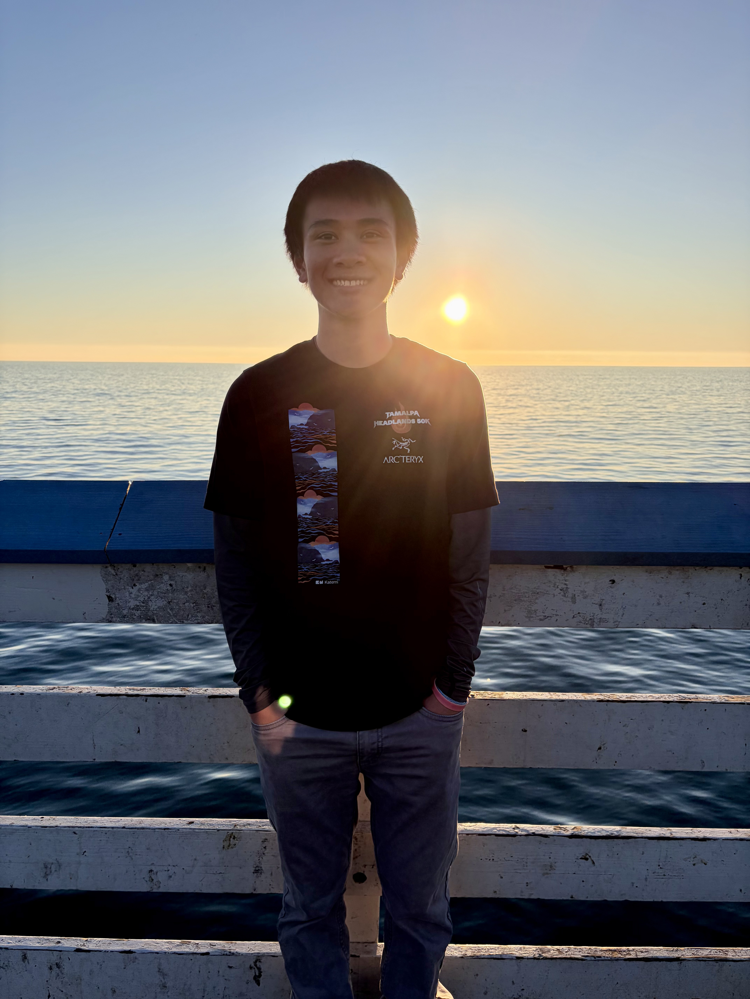

I am a first-year student at UC Irvine, majoring in math and minoring in accounting, with an interest in software engineering to develop engaging tools. Outside of my academic studies, I am gaining experience as a Software Engineering Internship Experience Participant and Bibliometrics Research Associate at ThinkNuero, LLC, as well as a Nunchi Health Fellow. In my free time, I love to run, hike, and bike to catch sunsets.